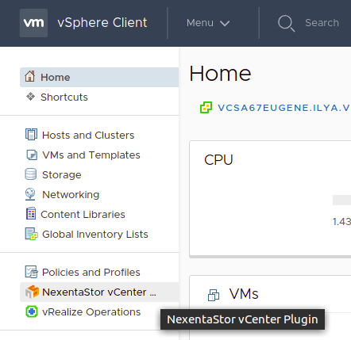

Registering a NexentaStor Appliance
To establish a connection between the vCenter management framework and the storage appliances that you want to manage, the first post-installation step is to register the NexentaStor 5.x nodes. You can either register a clustered appliance or a single node. To register a clustered appliance, you must have already configured HA cluster(s) and created VIP(s) For more information, see the NexentaStor 5.3 HA Guide
To register a NexentaStor appliance, do the following:
- Log in to
https://<vCenter_ip>:9443/ui/ - Optionally, modify the vCenter server parameters, as follows:
- Click Home then click on the Nexenta Storage Systems icon on the right frame
- In the Configuration window, click on the Settings tab
- As needed, edit the protocol and the vCenter IP address with your vSphere credentials
- Modify the Tenancy mode
- Click Save
- To register a single (unclustered) node, do the following:
- Go to Home > Nexenta Storage Systems icon
- Go to NexentaStorage Systems > Objects
- Click the Register NexentaStor Appliance icon
- Fill in the required fields
- Click Register
Note: If you inadvertently register a node as a single node that is actually a member of a cluster, the registration will fail
- To register a clustered pair of nodes, do the following:
- Go to Home > Nexenta Storage Systems icon
- Go to NexentaStorage Systems > Objects
- Click the Register NexentaStor Appliance icon
- Select the HA Cluster check box, and provide the IP address of both the nodes in the cluster
- Enter the Management IP address or the hostname
- Enter the NexentaStor user and password for both nodes for REST API authentication
- Fill in the required fields
- Click Register
Note: If you inadvertently register a single unclustered node as a member of a cluster, the registration will fail. In both cases, the NexentaStor username you entered must have privileges to execute REST API request
- Continue with Navigating the NexentaStor vCenter Plugin Interface
Navigating the NexentaStor vCenter Plugin Interface
After deploying the NexentaStor vCenter Plugin and registering the appliances, you can perform the following tasks to verify your installation and also orient yourself by navigating through the vCenter user interface (UI):
- Access and view the Nexenta Plugin Manager dashboard
- Get a list of the registered NexentaStor appliances. Once you have registered a clustered NexentaStor appliance or a single node appliance, the NexentaStor appliance list is immediately populated and is displayed
- View software license and version for each registered appliance
- Access the system logs
To use the vCenter UI to for NexentaStor appliances, do the following:
- Access the vCenter dashboard, in the following way:
- Open a Web browser and enter the following URL:
https://<vCenter_ip>:9443/ui/ - Enter your administrator credentials to log in
- On the Home page, click the Nexenta Storage Systems icon

- Open a Web browser and enter the following URL:
- To view the list and status of the registered NexentaStor appliance(s), go to Dashboard > Summary tab.
The newly populated list of appliances shows the following information:
- Status – The health status of the appliance
- Configured capacity – The sum of the free capacity and the used capacity of the pool after setting the redundancy type (RAID / mirror)
- Installed capacity – The sum of disk sizes installed in the appliance
Note: Once you have registered a clustered NexentaStor appliance or a single node appliance, the NexentaStor appliance list is immediately populated and is displayed
- View the appliance license and version in the following way:
- In the left frame click Nexenta Storage Systems, and select an appliance from the drop-down list.
- Click the Monitor tab
- Click the Hardware subtab
- View the system logs in the following way:
- On the Home page, click the Nexenta Storage Systems icon
- In the left frame click Dashboard
- Click the System Logs tab
- Select a log from the list to view the contents
- You can also export the system logs by selecting one from the drop down box and by clicking Export System Logs button